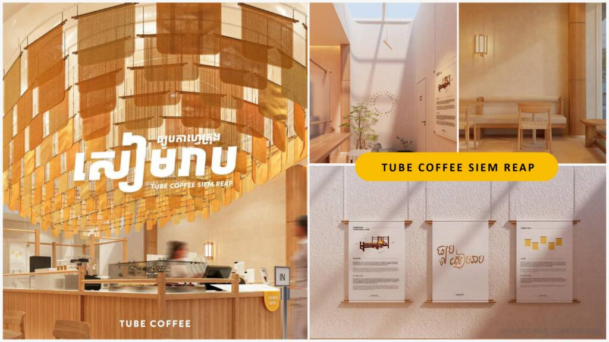

Tube Cafe is a Cambodian coffee chain known for its fast, affordable, and high-quality coffee and beverages. Inspired by the London Underground, the brand aims to provide a similar level of fast and efficient service in the Cambodian context. Tube Coffee, which started as a single cafe in 2017, has grown to over 40 locations across Cambodia, including Phnom Penh, Siem Reap, Sihanoukville, and Battambang. The brand also emphasizes its commitment to local sourcing and empowering young Cambodian staff.